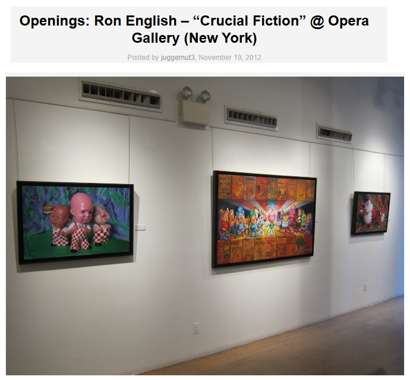

Exhibitions
Crucial Fiction, Opera Gallery, New York, New York, US, November 1–29, 2012.
Welcome to New Jersey, Jonathan LeVine Projects @ Mana Contemporary, Jersey City, New Jersey, US, February 18–March 18, 2017.
Literature
Ron English, Death and the Eternal Forever (Korero Press, 2014), p. 87. ISBN 978-0957664920.

Ron English, Status Factory: The Art of Ron English (San Francisco: Last Gasp, 2014), p. 104. ISBN 978-0867197891.

Ron English, Original Grin: The Art of Ron English (Paris: Cernunnos, 2019), p. 78. ISBN 978-2374950938.

“Opening: Ron English "Crucial Fiction" @ Opera Gallery, NYC”, Juxtapoz, 2012.

Notes
This work appears in exhibition photographs published in juggernut3, “Openings: Ron English – “Crucial Fiction” @ Opera Gallery (New York),” Arrested Motion, November 19, 2012.
Ancillary Documentation



Selected Online Circulation
Selected examples of the work’s online circulation, reproduction, or discussion. This list is not exhaustive; it is intended to document representative appearances of the image beyond formal exhibition and publication records.